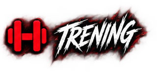
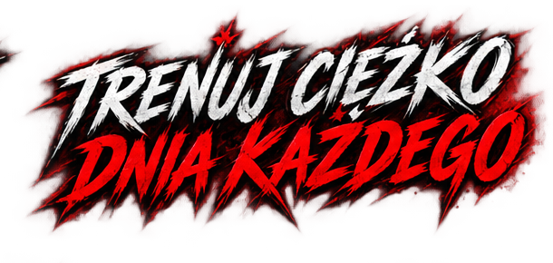
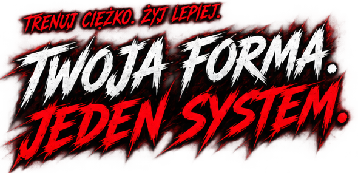
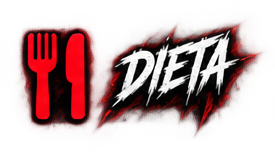
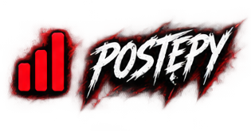

Plany, serie, RIR, przerwy, timery i historia ćwiczeń w jednym miejscu.


Jedna aplikacja do treningu, diety, postępów i GOAT AI. Wszystko, czego potrzebujesz, żeby działać konsekwentnie.



Trening. Dieta. Postępy. AI. Jeden spójny system zamiast kilku przypadkowych narzędzi.


Plany, serie, RIR, przerwy, timery i historia ćwiczeń w jednym miejscu.

Kalorie, B/T/W, posiłki i dzienny bilans — bez chaosu.

Masa, pomiary, regularność, objętość, PR i raporty.

Workout, Diet, Meal Scan i analiza pomagają szybciej przejść do działania.

Sztuczna inteligencja, która rozumie trening, dietę i Twoje cele. Tworzy plany, analizuje postępy i daje konkretne wskazówki.
Trening, dieta, pomiary i ruch składają się na jeden czytelny obraz Twojej regularności.


Śledź swoje postępy, analizuj wyniki i nie trać motywacji. GOAT pokazuje Ci realny obraz pracy, którą wykonujesz.

Zacznij bezpłatnie. PRO odblokowuje GOAT AI i funkcje premium.
Podstawowe funkcje treningu, diety i postępów.
Zacznij za darmoPełny dostęp do GOAT PRO i GOAT AI.
Wybierz miesięcznyPełny dostęp do GOAT PRO i GOAT AI. Najkorzystniejszy wariant.
Wybierz rocznyGOAT łączy trening, dietę, postępy i AI.
Tak, z poziomu konta sklepu.
Tak. Podstawowe funkcje są bezpłatne.
Zależnie od dostępności platform.